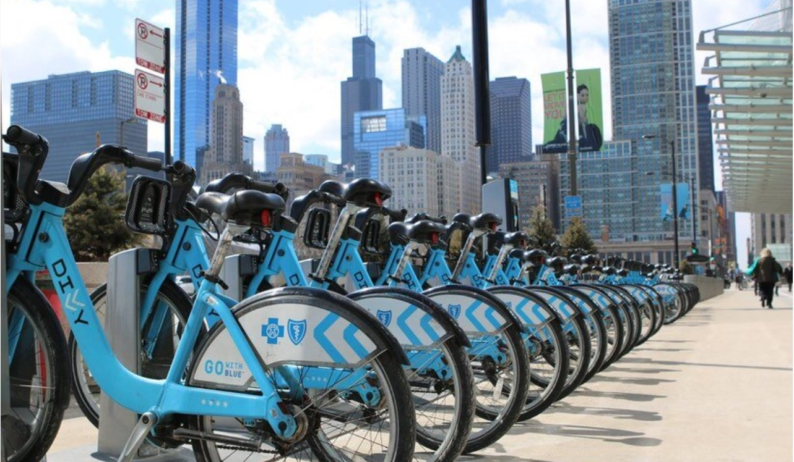
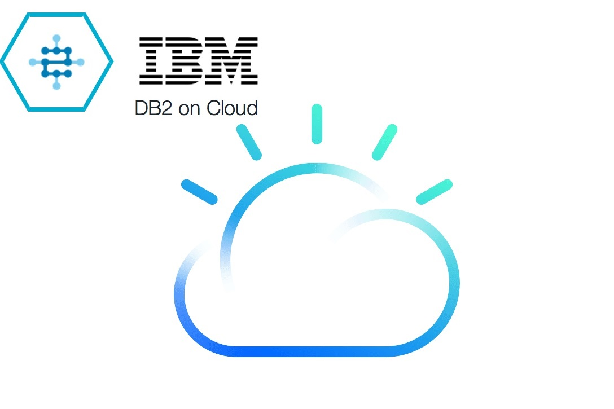
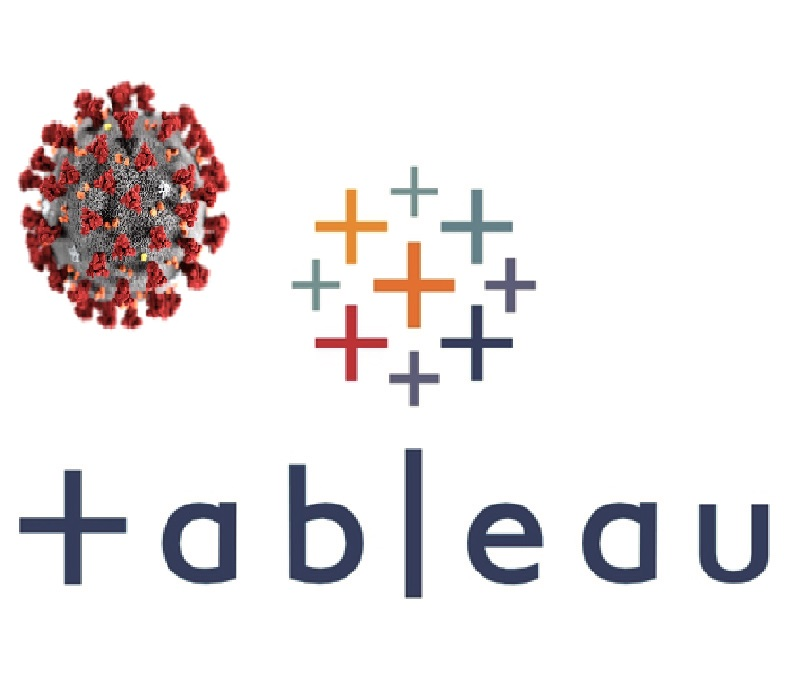
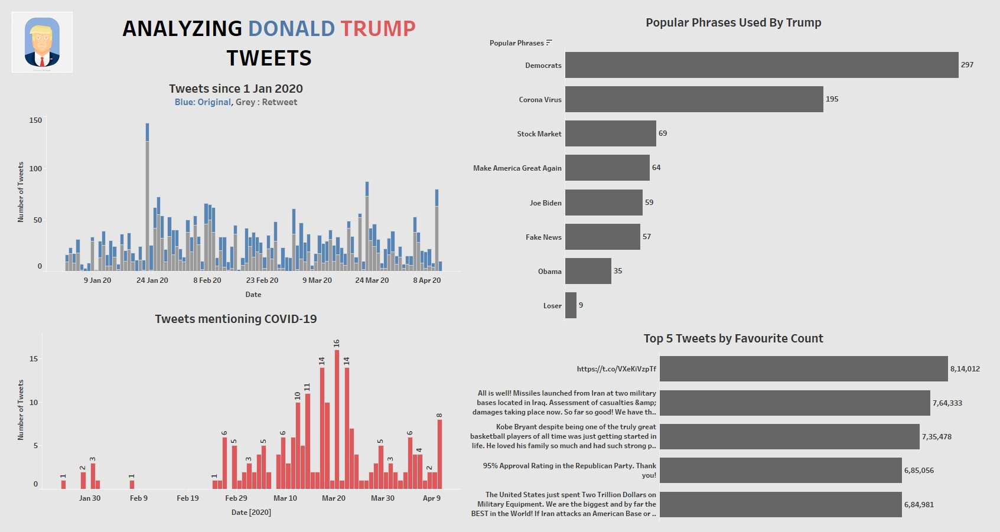

This project contains SQL scripts and jupyter notebooks which shows the use of basic DDL and DML using IBM CLOUD CONSOLE or using Python to connect to database and query using SQL statements.

An automated dashboard visualizing the covid data. As the data source updates the dashboard is updated simultaneously.
This particular project demonstrates the loading of dataset into pandas dataframe, cleaning of data and performing exploratory analysis on a dataset using matplotlib and seaborn visualizations.
Tableau Dashboard showing covid-19 cases by countries. Countries in the visualization are also used as a filter, you can click on respective country to toggle to the further details.
This project is analysis of datasets consisting monthly sales data. Monthly data is merged into a single dataframe then it is cleaned and visualized using pandas library in python.

Tableau Dashboard which contains the findings from the data scraped from twitter of Donald Trump. Click to view project to navigate to the dashboard.